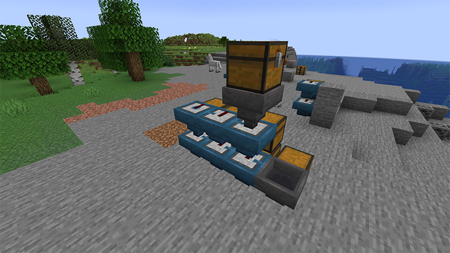
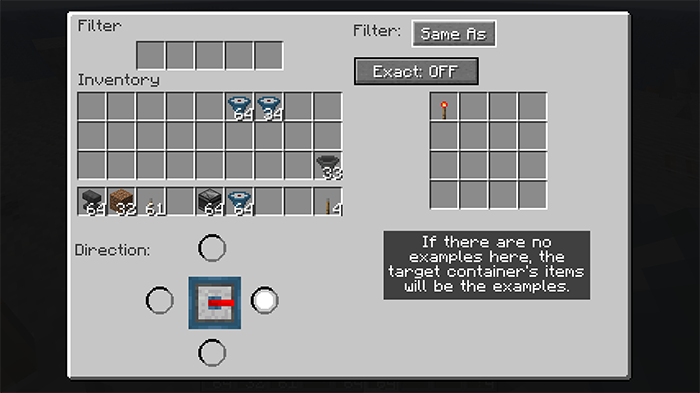
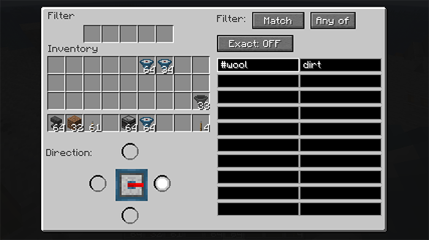

Philter
A Filtering super-hopper
Version 1.3.1+1.20.1The Philter mod gives you a filter super-hopper that works with vanilla Minecraft or any mod. Any kind of items can be diverted into a different output container. Otherwise, it just passes them along like any other hopper.
Here's what it looks like in action:

Overall the filter is a steel-blue hopper, and it has a redstone insert that does the filtering. The blue tab on the filter's top shows where normal items are directed. The redstone stripe flashes when an item is instead filtered to the hopper on the right.
The filter does not "pull" from the block above. This means you can run filters horizontally or vertically as you please without worrying about the filter pulling items down from the philter (or hopper or chest) above it. Which makes it very simple to create a sorter without using redstone to block that pulling.
Here's an image of how you can use it to build an item sorter:  The input is the topmost chest. The filters all point into the chests, and they face to the next filter (that is, the hopper part of the filter points to the next filter). The last filter faces down to put items into the row of filters below. There is an overflow for unfiltered items into the chest on the lower right.
So items from the chest will get sorted into the six chests, with unsorted items ending in the seventh chest. Note that lack of extra redstone mechanism, it is all done with the filter.
You can set up the filter using its UI: 
The area in the upper left is the basic hopper UI, and works just the same. On the right is the filter configuration. Here it is in "Same As" mode, which means it will only put items into the filter that match examples. These examples can be set by putting objects in the filter itself. Or the items already in the object container can be used as the examples instead. So if the filter has planks of every type, or if it has nothing and the target container has them, then planks will be diverted, and other items will continue onward.
The "Exact" button is off, so modifications will be ignored. If the examples included iron chestplate, this would allow damaged or enchanted iron chestplates to also be put in the target. If "Exact" were on, only chestplate that had the same damage and enchantment would be diverted.
The other primary mode is "Match", where you specify tags and regular expressions to tell the filter what to do: 
Here we've told the filter to match blocks that are covered by the tag "#wool" (all kinds of wool) plus anything that has "dirt" in the name. "Any of" can be switched to "All of", which would mean the item would have to both match "#wool" and have "dirt" in the name (which nothing does, so ...).
In "Match" mode, "Exact" means that NBT value will be included when string matching. So you could match any item that was enchanted with the pattern ".*Enchantments.*" because that string appears in the NBT of enchanted items.
The list of standard tags will probably be helpful. As for regular expressions, there are many tutorials on the web. Generally, text matches the same text except for special symbols. The most important are:
.matches any single character, so "d.rt" matches both "dirt" and "dart".*means "zero or more repetitions", so ".*" means "zero or more of any characters".^matches the start of the text, so you could say "anything whose name starts with blue" with the pattern "^blue.*", which would not match light blue things.$matches the end of the text.
Finally, the mode "None" just turns off the filtering entirely.
The third part of the UI, the part below your inventory, allows you to change the direction of the filter. Like a hopper, a filter can point in any direction but up, but also it cannot point in the same direction as the regular hopper output. When you place a filter, the filtered output is defined by how you're pointing, but you can change it afterwards using this part of the UI.
 Philter Mod for Minecraft by claritypack.com/philter
Philter Mod for Minecraft by claritypack.com/philter
is licensed under a Creative
Commons Attribution 4.0 International License.
© 2022-2023 by Ken Arnold. Based on a work at https://github.com/kcrca/philter.